1 · Title pace (5)
Average grid P4.4, finish P3.6, 18.2 points a race, a podium 74% of the time, retires only 7% of the time.
VER '21, '22, '23 · HAM '21 · PER '23
Data Science Lifecycle · CU Boulder
Three seasons. Sixty-six races. Thirteen hundred driver-races of grid slots, pit calls, tyre compounds and weather, pulled apart to find what actually decides a finishing position.
Bahrain International Circuit, the season opener in all three years I looked at. Drawn from FastF1 position data for the fastest lap of the 2023 race.
Formula 1 is the top tier of single-seater motorsport: ten teams, twenty drivers, and more than twenty races a season spread across five continents. What makes it different from most sports is that every team, or constructor, designs and builds its own car. A championship is won in the factory and the wind tunnel as much as on track, and the gap between the fastest and slowest cars on the grid can be a second or more per lap. On a race weekend, that car performance gets mixed together with driver skill, the strategy calls made on the pit wall, mechanical reliability, and whatever the weather decides to do. The result is a sport where it's hard to point at one thing and say that's why someone won. F1 has been running since 1950, but the last few years have brought in a huge new audience, much of it in the US, helped along by Netflix's Drive to Survive pulling back the curtain on the teams and their rivalries. It's also a big business. Races bring tourism and money into host cities, sponsorship deals are worth hundreds of millions, and thousands of engineering and manufacturing jobs depend on the teams. Whether you're a fan, a bettor, or someone playing F1 Fantasy, you end up asking the same question: what actually decides where a driver finishes? Teams answer that with enormous amounts of data, and a surprising amount of it is now public, which means anyone can go looking for the answer themselves. The debates online never really end. One weekend it's all about qualifying pace, the next it's tyre management or a botched pit stop. Those arguments rarely get settled, mostly because the factors are tangled together. A fast car qualifies well, pits at the right time, and finishes well, so it's hard to say which part did the work. Pulling those threads apart is the point of this project.
The result of a race matters to a lot more people than the twenty drivers on the grid. Teams feel it first. Prize money is split by finishing position in the constructors' championship, so a slow pit stop or the wrong tyre call can cost a team millions over a season, not just a few points on a Sunday. Drivers feel it through their contracts, since their market value and their next seat depend on turning the car's pace into results. Sponsors and broadcasters want close, unpredictable racing because it keeps people watching, and circuits and host cities notice when a dull season shows up in the next year's ticket sales. Then there are the fans, who put real emotion into title fights that often come down to exactly these details. For most of the sport's history, explaining why a race went the way it did has been left to commentators and journalists, which means expert opinion and good storytelling more than systematic analysis. That's changing as more timing data becomes public. Lap times, pit stop durations, tyre compounds, and track weather are all available now through community-run APIs and open-source tools like FastF1. People have already used this to dig into specific questions, like how much pole position is really worth, when the best window to pit is, or how much of a driver's success is actually the car. Most of that work looks at one factor at a time, though. Grid position gets studied on its own far more often than alongside tyre strategy, pit stop execution, team strength, and weather, even though all of those are happening at once in a real race. This project looks at them together. Using three full seasons of results from 2021 to 2023, I want to build an evidence-based picture of what separates a strong result from a weak one, and how much each factor really contributes once the others are accounted for.
The way I'm going about it follows the data science lifecycle, one stage at a time. The first stage was collecting and cleaning the data: 1,320 driver-race rows covering the grid, qualifying, pit stops, tyres, and track weather, which are documented on the Data Prep & EDA tab. Before trying to predict anything, it's worth asking what structure is already sitting in that data without telling a model what to look for. That's what unsupervised methods are for. Clustering groups drivers by how their seasons actually played out, without being told who drove for which team, to see whether natural tiers show up and whether they follow the driver or the car. Principal Component Analysis takes the thirteen numeric measurements behind each race result and finds the handful of underlying directions that explain most of the variation, which shows which factors move together and which ones carry independent information. Those two views of the data shape what comes next. Once I know which variables are redundant and which groups exist naturally, the supervised models in later tabs (Naive Bayes, decision trees, SVMs, regression, and neural networks) can be built on features that actually say something, and their results can be checked against patterns I've already seen. The aim is that every method on this site adds one more piece of evidence towards the same question, instead of being a separate exercise.
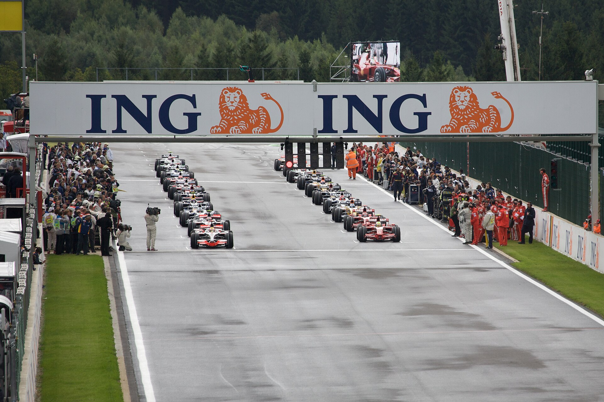
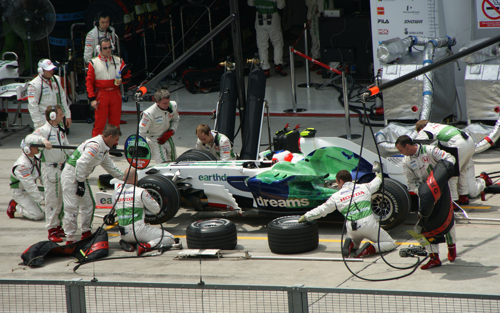
My data stops at 2023, but for context, here's this year's schedule. One oddity: the Bahrain Grand Prix is being held at Sepang in Malaysia this year.
| # | Grand Prix | Circuit | Country |
|---|
Everything here covers the 2021, 2022, and 2023 seasons, 66 races in total, and comes from two free sources:
The raw pulls and scripts are all in the repo:
First eight rows of the merged results, qualifying and pit stop data, before any cleaning.
The same rows after cleaning: DNF flag derived, grid 0 recoded, missing pit stop values resolved, grid_zone added.
The biggest catch was that Jolpica gives almost every driver a numeric finishing position, even ones who retired, so I had to work out who actually finished from the status text instead. Pit-lane starts show up as grid position 0, which would look like pole, so I moved those to 21. Where a value can't exist, like the average pit stop time for a driver who never stopped, I left it blank and added a flag column rather than filling in a number. Here's the full log from the cleaning script:
Twelve charts built from the cleaned dataset. Hover over any of them for exact values, and use the season filter to look at one year at a time (charts 8, 11, and 12 always show all three seasons).
Can three seasons of results sort drivers into natural tiers without being told who drove what? And do those tiers follow the driver or the car?
Clustering is an unsupervised learning method. There is no target column and no right answer to check against. The algorithm only sees rows of numbers and tries to put similar rows in the same group and dissimilar rows in different groups. What counts as "similar" is decided by a distance measure, so picking that measure is as important as picking the algorithm. Because nothing is labelled, clustering is a tool for discovery: it shows which groups exist in the data, and it's then up to the analyst to work out what those groups mean.
There are two main families. Partitional clustering, with k-means as the usual example, splits the data into exactly k non-overlapping groups. You choose k, the algorithm places k centroids, assigns every point to its nearest centroid, moves each centroid to the mean of its points, and repeats until nothing changes. It's fast and simple, but it needs k up front, it depends on where the centroids start (so it's run many times with different starts), and because it minimises squared Euclidean distance it favours compact, roughly round clusters. Hierarchical clustering doesn't need k in advance. The agglomerative version starts with every point as its own cluster and keeps merging the two closest clusters until only one is left. The full history of merges is drawn as a tree called a dendrogram, and cutting the tree at any height gives a clustering. How the distance between two clusters is measured is called the linkage: single (closest pair), complete (farthest pair), average (mean of all pairs), or Ward (smallest increase in variance).
Two distance measures are used here. Euclidean distance, the straight-line distance between two points, is what k-means uses. It cares about magnitude, so two drivers whose numbers are all large end up far from two drivers whose numbers are all small. Cosine distance, which is 1 minus the cosine similarity, ignores length and only compares direction: two vectors pointing the same way have a cosine distance near 0 however long they are. On standardized data that means cosine distance compares the shape of a driver's season (which stats are above or below average, relative to each other) rather than how extreme it was. The hierarchical clustering on this page uses cosine distance with average linkage. Ward linkage isn't used because it is only defined for Euclidean distance.
For this project, clustering is a way of letting the results speak before any model is told what to predict. Each driver's season becomes one point described by eleven numbers: average grid and finish, points, podium and points-finish rates, retirements, positions gained, pit stops, the timing of the first stop, pit lane time, and grid penalties. If clear tiers appear, I can check whether a driver stays in the same tier when he changes team, which speaks directly to the car-versus-driver question from the Introduction, and whether strategy variables like stop timing separate the groups at all.
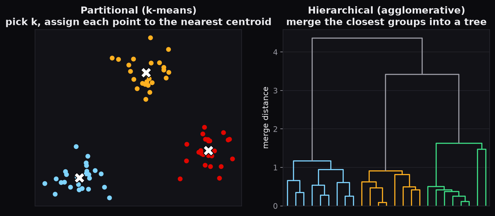
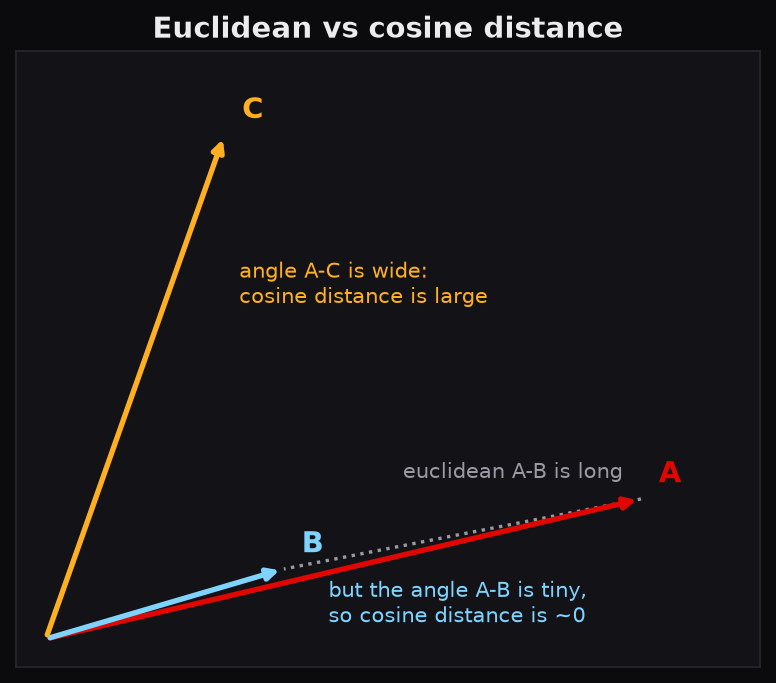
Clustering only works on unlabeled numeric data. Every method here computes distances between rows, and you can't take the distance between "Red Bull" and "Ferrari" or between a driver's name and a number. Labels also have to come out for a second reason: if team or driver were left in, the algorithm would simply rediscover them, and the point is to see what groups appear without that information. Labels are kept to one side and only brought back afterwards to read the clusters.
Starting from the cleaned driver-race table (1,320 rows), I took these steps:
First eight driver-seasons with their labels and raw averages, built from the cleaned dataset.
The same eight rows with the labels removed and every column standardized. This is the exact matrix k-means and hierarchical clustering receive.
Data used:
Everything is in Python with scikit-learn and SciPy: code/clustering.py (view on GitHub). The script builds the profiles, runs k-means for every k from 2 to 10 (50 random starts each), scores each k with the silhouette coefficient, runs agglomerative clustering with cosine distance, and draws every figure on this tab. The core of it:
X = StandardScaler().fit_transform(profiles[FEATURES])
for k in range(2, 11):
km = KMeans(n_clusters=k, n_init=50, random_state=42).fit(X)
sil.append(silhouette_score(X, km.labels_))
# hierarchical clustering with cosine distance
D = pdist(X, metric="cosine")
Z = linkage(D, method="average")
labels = fcluster(Z, k, criterion="maxclust")
ari = adjusted_rand_score(km_labels[k], hc_labels[k])
To rerun it: python code/clustering.py with pandas, NumPy, scikit-learn, SciPy and matplotlib installed.
The silhouette coefficient measures, for each point, how much closer it is to its own cluster than to the nearest other cluster. It runs from −1 to 1, and higher is better. I ran k-means with k from 2 to 10. The silhouette is clearly highest at k = 2 (0.31), then drops to between 0.16 and 0.20 for every k from 3 to 10. The elbow plot tells a similar story: within-cluster error falls fastest going from 1 to 2 clusters and then declines steadily with no sharp bend. So the strongest structure in the data is a single split into two groups. Finer splits exist, but they are softer.
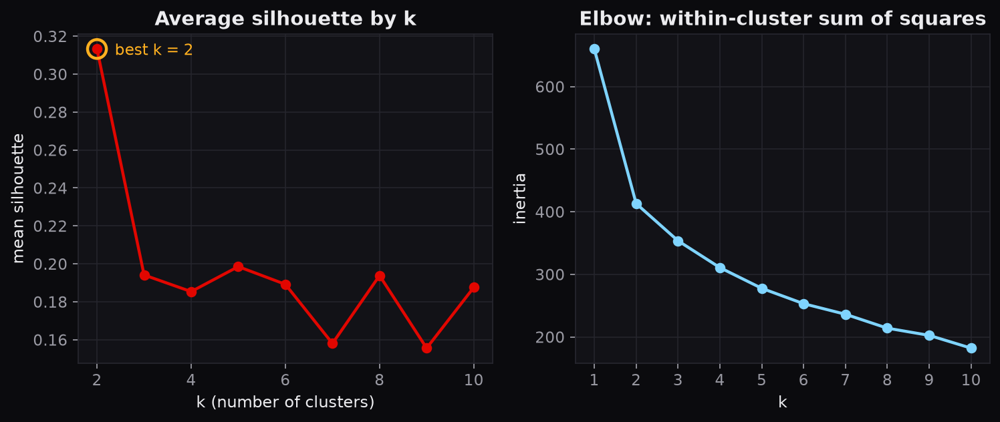
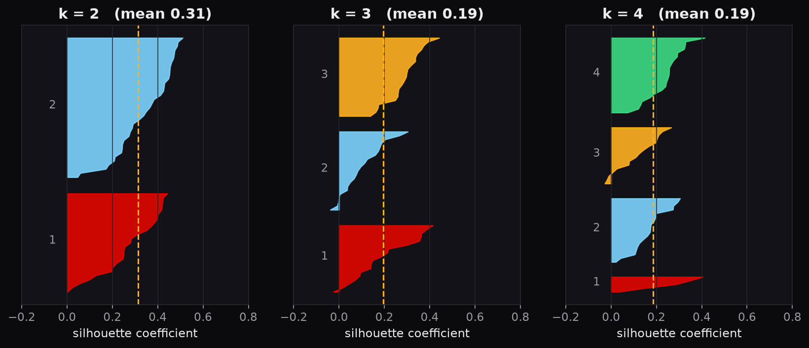
To see the clusters, I projected the eleven-dimensional profiles onto their first two principal components, which together hold 64% of the variance (PCA itself is covered on the next tab). PC1 is essentially "how strong was this season": strong seasons sit on the left. Each dot is coloured by the team the driver raced for, and each cluster is the shaded outline with its number on top.
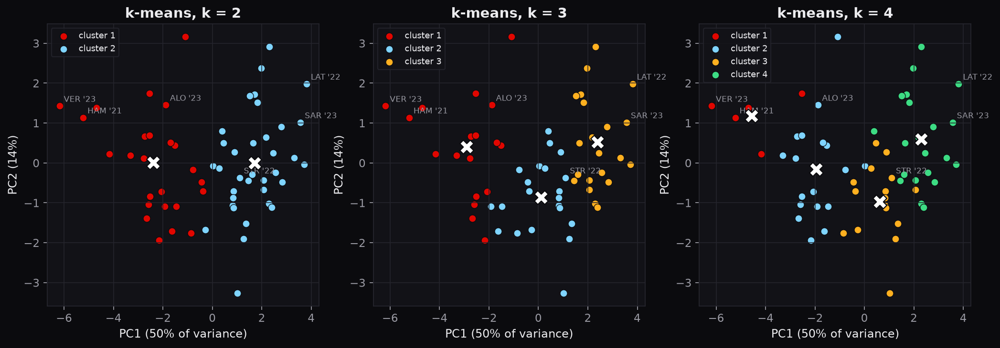
Average grid P4.4, finish P3.6, 18.2 points a race, a podium 74% of the time, retires only 7% of the time.
VER '21, '22, '23 · HAM '21 · PER '23
Grid P6.4, finish P7.2, 8.9 points a race, scores in 81% of races. Mostly Ferrari, Mercedes and McLaren seasons.
LEC, SAI, NOR, HAM '22-'23, RUS '22-'23, PER '21-'22, ALO '23
Start P12.2 but gain 2.1 places on average, the most of any group, finishing P11.4 and scoring in 47% of races.
STR, OCO, VET, RIC, ALO '21-'22, GAS '23
Start P14.5, finish P14.4, score in only 16% of races. They also pit earliest (25% into the race) and have the slowest pit lane times (24.3 s).
TSU, ZHO, MAG, MSC, LAT, ALB, SAR, HUL, DEV
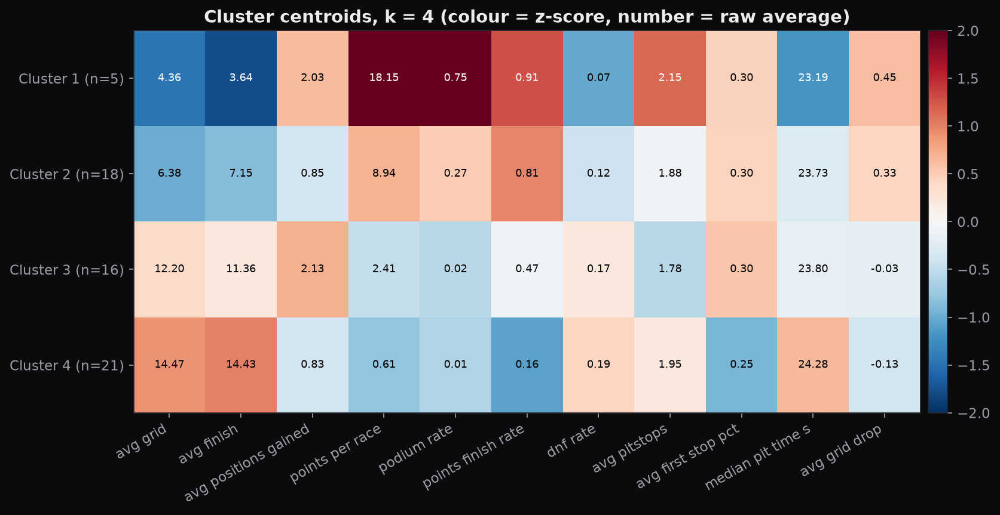
The dendrogram shows all 60 driver-seasons merged with cosine distance and average linkage. The highest merge, at a cosine distance of about 1.37, joins two large branches that have little in common, and the next merge down is much lower (about 0.97). The biggest gap between consecutive merge heights is therefore just below the top, so hclust suggests k = 2. Its own silhouette, using cosine distance, also peaks at k = 2 (0.50).
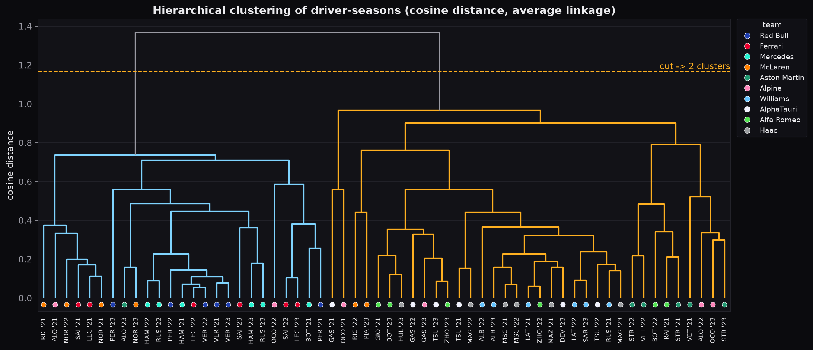
At k = 2 the two methods agree perfectly: the same 25 driver-seasons land in the upper group under both, an adjusted Rand index (ARI) of 1.00. That matters because they measure similarity differently. K-means uses Euclidean distance and hclust uses cosine, so the top-versus-rest split isn't an artefact of one method.
Below k = 2 they diverge in an informative way. At k = 4 (ARI 0.59), k-means splits the strong group by how much stronger it was, pulling out the five title-pace seasons. Hierarchical clustering with cosine distance keeps all 25 strong seasons together, because a dominant season and a merely good one point in the same direction even though one is much longer. Instead, hclust splits the weaker group by shape: a 9-member branch of midfield seasons that scored in 44% of races (Aston Martin's Stroll and Vettel, plus ALO '22, OCO '23, RAI '21 and BOT '22) separates from 24 backmarker seasons that scored in only 18%, and GAS '21 and OCO '21 form a tiny pair of their own.
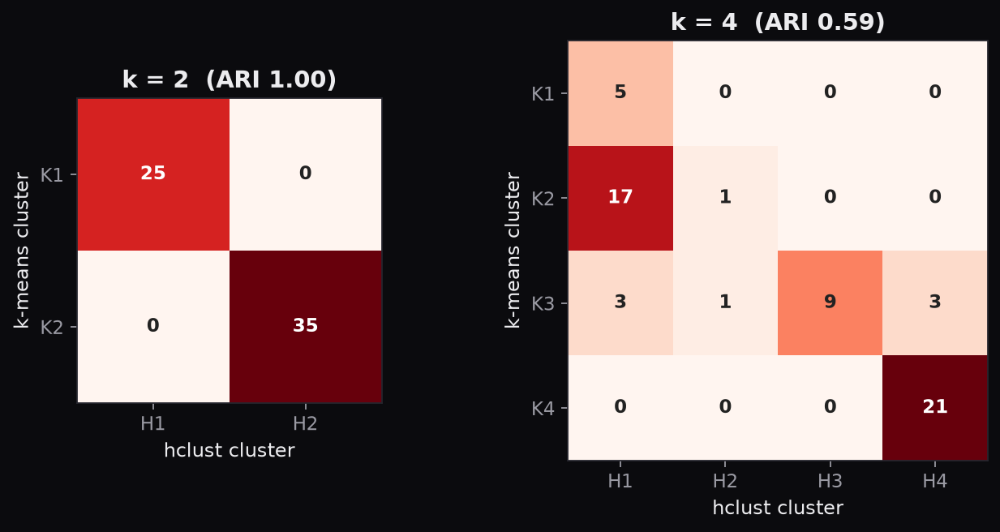
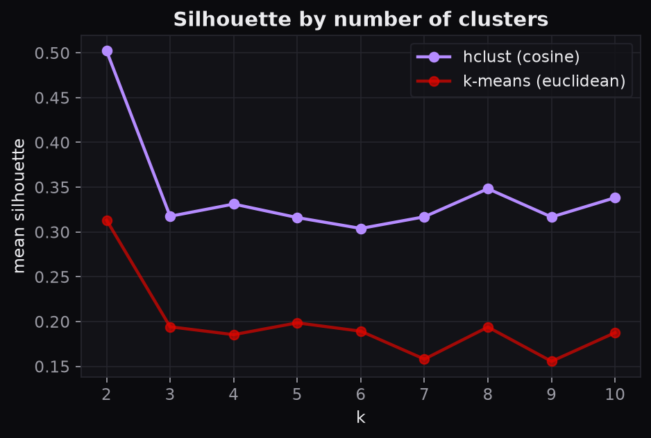
Without being told anything about teams, both clustering methods found the same basic divide in Formula 1 between 2021 and 2023: about 25 driver-seasons that regularly scored points and 35 that mostly didn't. That divide is the strongest structure in the data, and two very different ways of measuring similarity agree on it exactly. Inside the top group, k-means picked out a small title-pace tier (Verstappen's three seasons, Hamilton in 2021, and Pérez in 2023) that stands apart even from other front-runners.
The clearest finding for the car-versus-driver question is what happens when drivers change cars. Russell was a backmarker at Williams in 2021 and a regular podium threat as soon as he moved to Mercedes in 2022. Alonso sat in the midfield-climber group in both of his Alpine seasons, then jumped into the podium group in his first year at Aston Martin in 2023. Gasly went the other way, from the podium group in 2021 to the backmarkers in 2022 without changing team, because AlphaTauri's car got worse. Teammates share a cluster in 25 of the 30 team-seasons at k = 2, and at k = 4 they are either in the same cluster (19 times) or in neighbouring ones (9 times). The groups follow the car far more than the name, which fits the strong team effect seen on the EDA tab. The driver still shows up at the margins, though: Verstappen was in the title-pace group in 2021 and 2022 while his Red Bull teammate Pérez was a tier below, and Hamilton was a tier above Bottas at Mercedes in 2021.
Strategy separates the groups much less than results do. Stop counts are almost identical across clusters (about 1.8 to 2.2 per race). What does differ is that backmarkers pit earliest and have the slowest pit lane times, and that the midfield climbers gain the most places from where they start, more than the regular podium group. That suggests strategy and race craft matter most in the midfield, where cars are evenly matched, and much less at the front, where grid position and car pace already decide most of the result. That's a question the supervised models in later tabs can test directly.
Thirteen measurements describe every driver's race. How many of them are really telling us something different?
Principal Component Analysis (PCA) is a way of describing data with fewer variables while losing as little information as possible. It looks for new axes, called principal components, that are weighted combinations of the original variables. The first principal component (PC1) is the direction along which the data is most spread out. PC2 is the direction of greatest remaining spread that sits at right angles to PC1, PC3 is at right angles to both, and so on. There are as many components as original variables, but they are ordered by how much variance each one captures, so the first few usually hold most of the information. Keeping only those, and dropping the rest, is dimensionality reduction.
The maths behind this comes from eigenvectors and eigenvalues. After the data is standardized, PCA builds the covariance matrix, a square table holding how every pair of variables moves together. An eigenvector of that matrix is a direction that the matrix only stretches, never rotates: multiplying the matrix by the eigenvector gives back the same vector scaled by a number, and that number is the eigenvalue (Cv = λv). Each eigenvector is one principal component and tells you the direction. Its entries, called loadings, say how much each original variable contributes. The matching eigenvalue tells you how much variance lies along that direction. Dividing an eigenvalue by the sum of all eigenvalues gives the share of total variance that component explains. Because the covariance matrix is symmetric, its eigenvectors are all at right angles to each other, which is why the components are uncorrelated. An eigenvalue of exactly zero means a direction with no spread at all, which happens when one variable can be calculated perfectly from the others.
Reducing dimensions matters because high-dimensional data causes real problems. It can't be plotted beyond three axes, so patterns stay hidden. Many variables are often redundant (in F1, qualifying position, grid slot, and finishing position mostly say the same thing), and correlated inputs make models like regression unstable. Distances also stop behaving: as the number of dimensions grows, the nearest and farthest neighbours of a point end up almost the same distance away, which hurts any method built on distance, including the clustering on the previous tab. This is the curse of dimensionality. More dimensions also mean more data is needed to cover the space, more risk of overfitting, and more computation. PCA helps by replacing many correlated variables with a few uncorrelated components that keep most of the variance, which makes the data easier to visualise, separates real signal from noise in the smaller components, and gives later models a compact, non-redundant set of inputs.
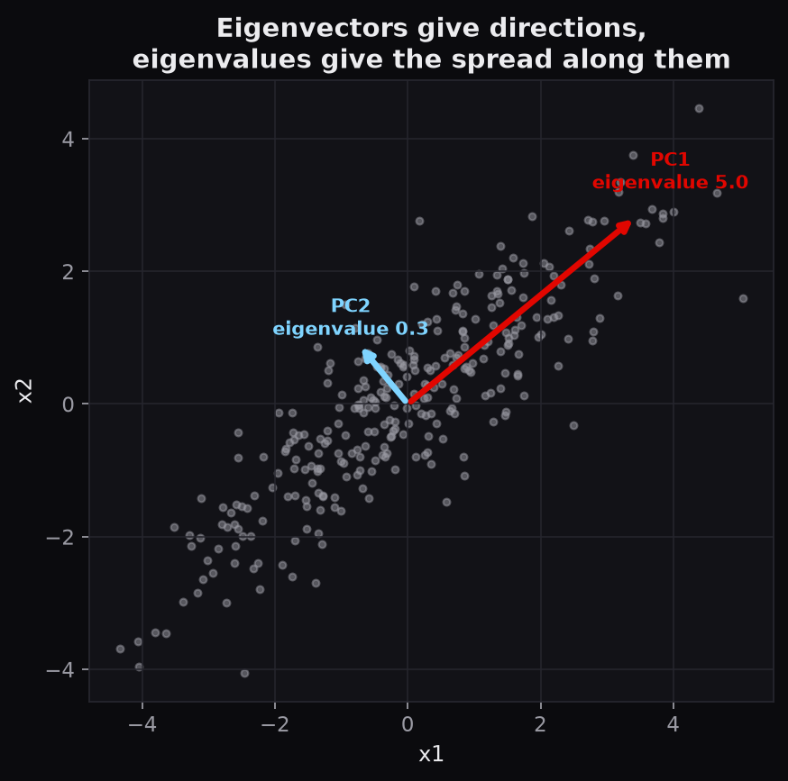
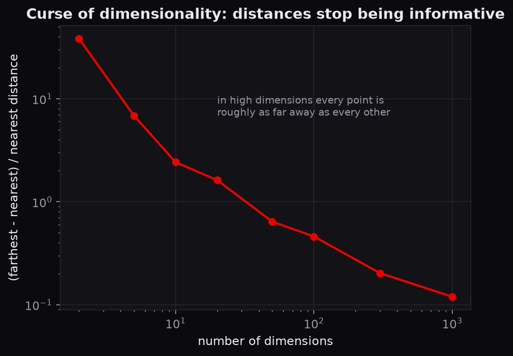
Here, PCA answers a practical question for the rest of the project: of the thirteen numbers recorded for each driver's race, how many separate kinds of information are there, and which variables belong together?
PCA needs numeric, unlabeled data with no missing values, and in practice it also needs the data to be standardized. It works from variances and covariances, so text labels can't be used, and a missing value has no position in space. Standardizing (mean 0, standard deviation 1 for every column) matters because PCA chases variance: without it, track temperature, measured in tens of degrees, would dominate a share-of-race variable that runs from 0 to 1 just because of its units. After standardizing, PCA is effectively working on the correlation matrix and every variable starts on equal terms.
This time the unit of analysis is a single driver in a single race, so there are many more rows than on the clustering tab. Steps:
First eight rows (the 2021 Bahrain Grand Prix, the same drivers as the cleaned table on the Data Prep tab) with their labels and the thirteen measurements in raw units.
The same rows with labels removed and all thirteen columns standardized to mean 0 and standard deviation 1.
Data used:
Python with scikit-learn: code/pca.py (view on GitHub). The script prepares the data, fits PCA with every component so the full set of eigenvalues is available, and draws every figure on this tab. The core of it:
X = StandardScaler().fit_transform(data[FEATURES]) pca = PCA().fit(X) eig = pca.explained_variance_ var = pca.explained_variance_ratio_ cum = np.cumsum(var) n95 = np.searchsorted(cum, 0.95) + 1 scores = pca.transform(X) loadings = pd.DataFrame(pca.components_.T, index=FEATURES, columns=pcs) corr = loadings * np.sqrt(eig)
To rerun it: python code/pca.py.
The eigenvalues come out as 3.30, 2.26, 1.96 and 1.86 for the first four components, then drop to 0.94 and below. Since the data is standardized, each original variable carries a variance of 1, so a component with an eigenvalue above 1 holds more information than any single variable. Four components pass that test (the Kaiser rule), and together they keep 72% of the variance. PC1 alone explains 25%, PC2 17%, PC3 15% and PC4 14%. Reaching 95% takes nine components. The last eigenvalue is exactly 0, which is the redundancy built into the data: positions gained is always grid minus finish, so that direction has no spread at all.
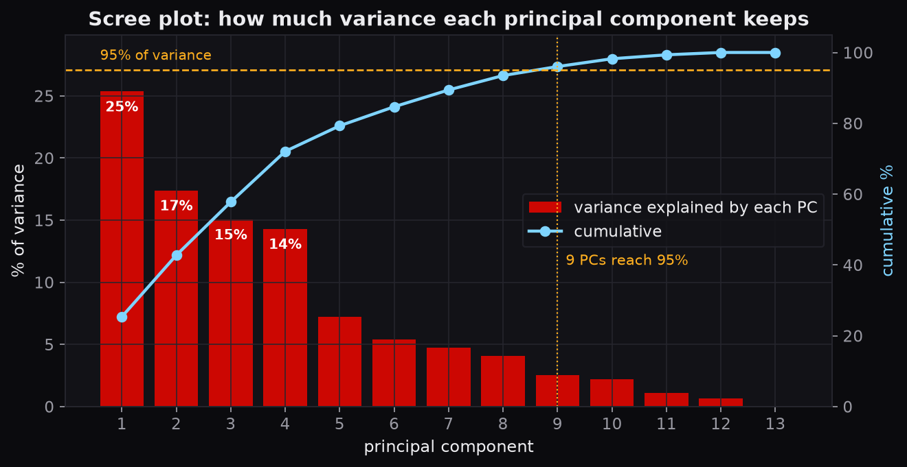
The loadings, the entries of each eigenvector, show which variables build each component. Large values (positive or negative) matter. Values near 0 don't.
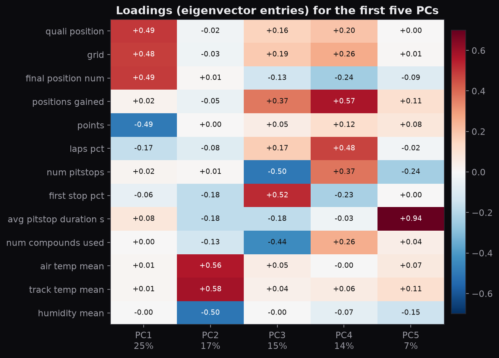
A biplot shows the rows and the variables at once. Each dot is one driver-race placed by its PC1 and PC2 scores, and each arrow is one variable's loading. Arrows pointing the same way are positively correlated, opposite arrows are negatively correlated, and arrows at right angles are unrelated. The longer the arrow, the better that variable is represented on these two axes. Here the result variables lie flat along PC1, the weather variables stand straight up along PC2, and the two groups are at right angles.
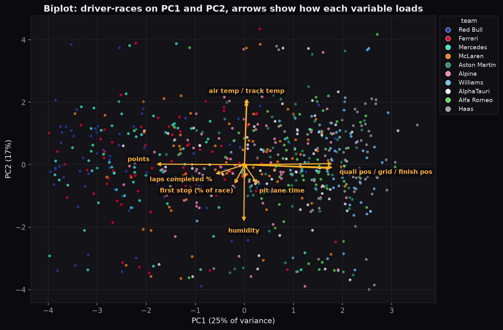
Correlation circles show the same thing without the points. Each arrow's coordinates are the correlation between a variable and the two components, so an arrow reaching the circle means that variable is almost fully explained by those two PCs. The PC3 and PC4 circle shows the strategy variables that are hidden in the first view.
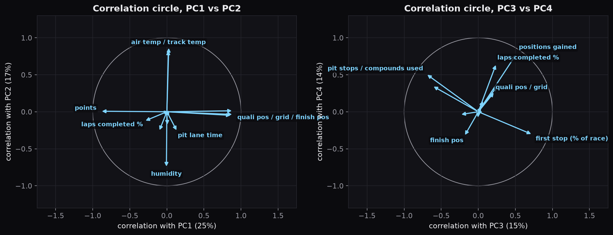
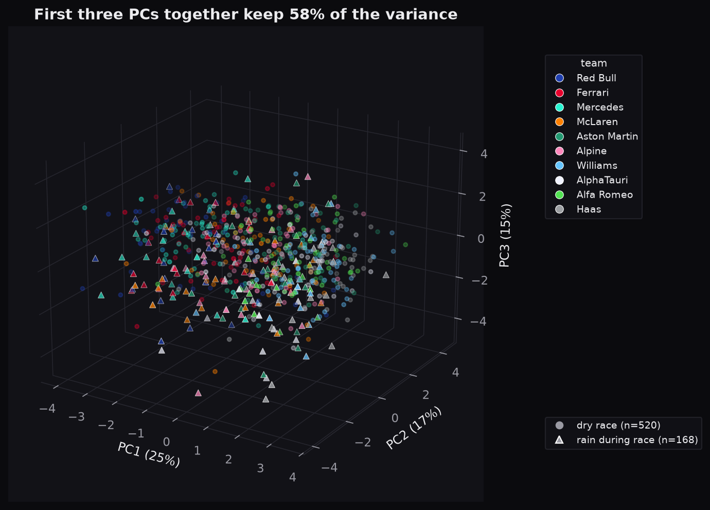
The biggest single source of variation in a driver's race is simply where they ended up, and it can't be pulled apart from where they qualified and started. Qualifying position, grid slot, finish, and points all collapse onto one component. That backs up the 0.73 grid-to-finish correlation from the EDA tab and the clustering result that the field splits mainly by results: in this period, a race weekend mostly confirmed the order set on Saturday.
The other things a race depends on turn out to be separate from that. Weather is its own component, at right angles to the result, so hotter or more humid races didn't systematically favour front or back runners in this data. Pit strategy is a third, independent component, and recovering positions is a fourth. None of the three is redundant with the result or with each other, and that's useful for the models still to come. It means strategy and conditions can't be dropped as "already captured by grid position". They add information, but each one explains far less variance than the result axis, which is consistent with how small the effect of stop count looked on the EDA tab.
For the next stages, PCA suggests two practical changes. First, qualifying, grid, and finish shouldn't all go into a model as separate predictors, because they are close to collinear. Second, roughly four components (or one variable picked from each group) capture most of what the thirteen measurements say. Rain also stood out in the third component, linking wet races to more stops and more compounds, which gives the Naive Bayes and decision tree tabs a natural condition to test.
Not started yet.
Not started yet.
Not started yet.
Not started yet.
Not started yet.
Not started yet.
MS Data Science student, CU Boulder
Nivid is a graduate student in the Data Science program at CU Boulder, graduating in May 2027. He completed his undergraduate degree at Nirma University in Ahmedabad before moving to Boulder for his master's. His work covers machine learning, regression modeling, and evaluating AI tools. This fall he is a Course Assistant for three intro data science courses. Outside the classroom, Nivid follows Formula 1 and plays cricket on weekends.